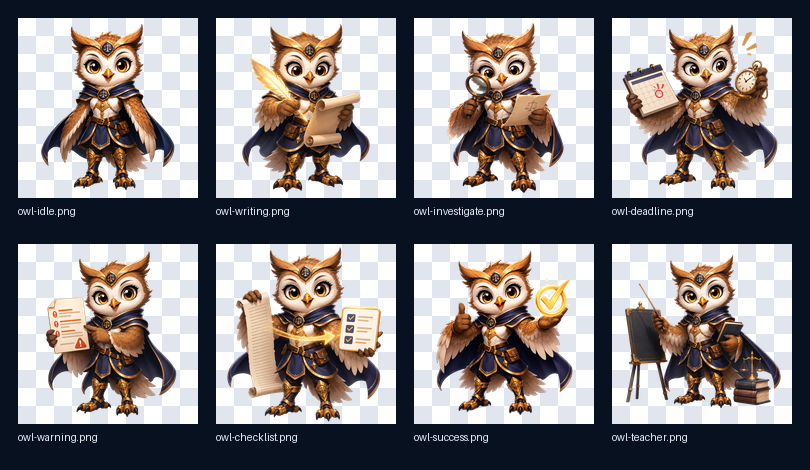
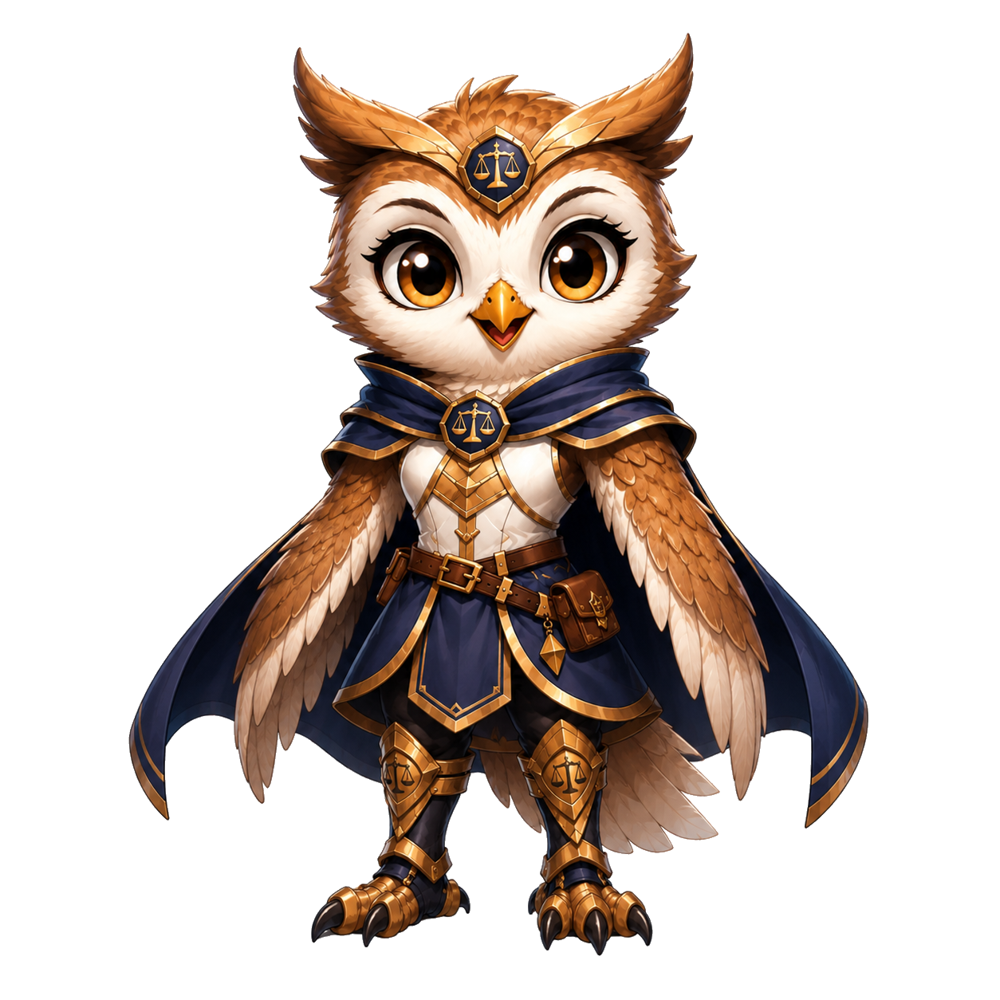

Coruj IA - Sistema de Analise de Processos Juridicos
Padrao II
MP Assistente
Cadastro
Editor
Andamento
Carga
Consulta
Relatorios
Apoio
Ajuda
Carga e Importacao
Fluxo de Trabalho
Gerenciador de Arquivos
Consulta Avancada
Agenda de Compromissos
Fluxo de Trabalho
Legenda
Estilo da visualizacao
Padrao II
- _ x
Selecione um modelo
Recomendar modelo
Automatico
Semi-automatico
PDF:
solte aqui ou clique para extrair o texto do processo.
Recomendar
Novo caso
Ver avaliacoes
Treinar

Coruj IA
Assistente juridica em modo online demonstrativo
Coruj IA
Resposta estruturada
x